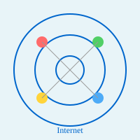

Internet

The Internet is a global system of interconnected computer networks that enables digital communication and data exchange worldwide. It is the infrastructure upon which modern digital life is built, connecting billions of devices including computers, smartphones, servers, and IoT devices across the globe. The Internet was originally developed as a research project called ARPANET in the 1960s, which was funded by the United States Department of Defense. Over time, it evolved into the massive public network we know today.
The Internet operates through a set of standardized protocols and technologies that allow different networks and devices to communicate seamlessly. These protocols provide a common language for devices to exchange data regardless of their hardware, software, or location. The fundamental architecture of the Internet is based on a decentralized model where no single entity controls the entire network; instead, it consists of millions of independently operated networks that choose to interconnect with each other.
Key characteristics of the Internet include its openness, scalability, and robustness. Data travels across the Internet through multiple pathways, known as packet switching, which ensures that if one route becomes unavailable, data can be rerouted through alternative paths. This redundancy makes the Internet highly reliable and resilient to failures. The Internet enables various services including the World Wide Web, email, file transfer, voice over IP (VoIP), video streaming, and countless other applications that have transformed how we work, learn, communicate, and entertain ourselves.
Key Internet Statistics
As of 2026, there are over 5 billion Internet users worldwide, representing approximately 63% of the global population. The Internet carries trillions of data packets every day, with an estimated data volume of over 2.5 quintillion bytes generated daily. The Internet continues to grow exponentially as more devices become connected through IoT technologies.